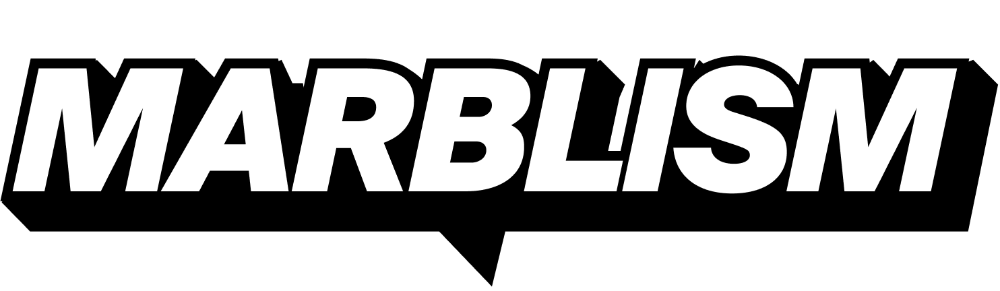

Q4 2026Activaciones Q4
Las activaciones de marca del trimestre: presupuesto, meta de usuarios y plan de contenido de cada una.
CPA objetivo $150. Break-even de las activaciones 01 y 02: 170 usuarios.
Café gratis para emprendedores
Una semana completa regalando café a founders y emprendedores. Cada café es una conversación, una demo y un registro.
Mockup del pop-up: booth negro, vasos amarillos y standees de los personajes.
Escenarios
| Escenario | Usuarios | CPA real | vs. objetivo ($150) |
|---|---|---|---|
| Bajo | 90 | $200 | +33%, por arriba del objetivo |
| Break-even | 120 | $150 | En el objetivo |
| Meta | 180 | $100 | -33%, mejor que el objetivo |
| Ideal | 240 | $75 | -50%, la mitad del CPA |
La regla es simple: $18,000 entre $150 de CPA = 120 usuarios registrados para que la activación pague igual que los canales actuales. A partir del usuario 121, cada registro sale más barato que en paid. La meta operativa es 180: unos 26 registros por día durante los 7 días.
Plan de contenido
- Pre (semana -1): teaser en redes con la ubicación y el gancho "café gratis toda la semana para emprendedores", invitación directa a comunidades de founders y geo-ads en la zona.
- Durante (día 1 a 7): un reel diario de UGC, micro-entrevistas de 30 segundos con la pregunta "¿qué estás construyendo?", demo de Marblism en pantalla y QR en cada vaso que lleva al registro.
- Durante: historias en vivo cada mañana con contador de cafés regalados como mecánica de contenido.
- Post (semana +1): video recap, carrusel con los mejores founders entrevistados y secuencia de email de onboarding a todos los registros.
- Medición: UTM propio para el QR del evento, código exclusivo del pop-up y conteo de registros por día para el CPA real al cierre.
Merch

Los vasos amarillos y la merch de la merch store: mugs, gorra, stickers y tote.
Pickleball Marblism en San Diego
Palas, gorras y merch Marblism en las canchas de San Diego, donde juega la comunidad tech y founder de la ciudad.

El gear: palas, bolas amarillas, gorra y toalla Marblism en cancha de San Diego.
Concepto
- El gear: palas, gorras, toallas y fundas con branding Marblism, regaladas en canchas y clubes con alta concentración de gente de tech.
- La mecánica: para llevarte el gear te registras en Marblism en el momento, mismo modelo de QR y UTM que el pop-up de café.
- Escalable: puede crecer a un torneo amateur "Marblism Open" con las palas como premio.
Contenido
- Reels de partidos con el gear en cancha y founders locales jugando.
- Serie "pitch entre puntos": el founder pitchea su startup en lo que dura un rally.
- UGC de la comunidad posteando su gear, con hashtag propio de la activación.
Con $7,500 de presupuesto y CPA de $150, el break-even es de 50 usuarios. La meta operativa es 75 registros, que dejaría el CPA en $100. Pendiente de definir: canchas o clubes específicos y fechas.
Work from San Diego
El equipo se instala una semana en San Diego durante las activaciones y todo el contenido se produce en sitio.
El plan
- El equipo: Mateo, Jesús, Fin, Paulina, el crew de filmmaking y posiblemente Ulric.
- La idea: trabajar la semana completa desde San Diego mientras corren el pop-up de café y la activación de pickleball.
- Por qué vale: las activaciones generan el contenido y el equipo en sitio lo captura en calidad y volumen: reels, BTS, entrevistas y vlogs del equipo.
Opcional pero muy bueno para contenido. Los $7,000 son presupuesto de producción y viaje, no cuentan contra el CPA de adquisición de las activaciones 01 y 02.
More ideas to come
Presupuesto disponible del Q4 para las siguientes activaciones. Ideas en cocina.
Ulric: este es tu espacio. Deja tus ideas aquí abajo y las sumamos al plan.